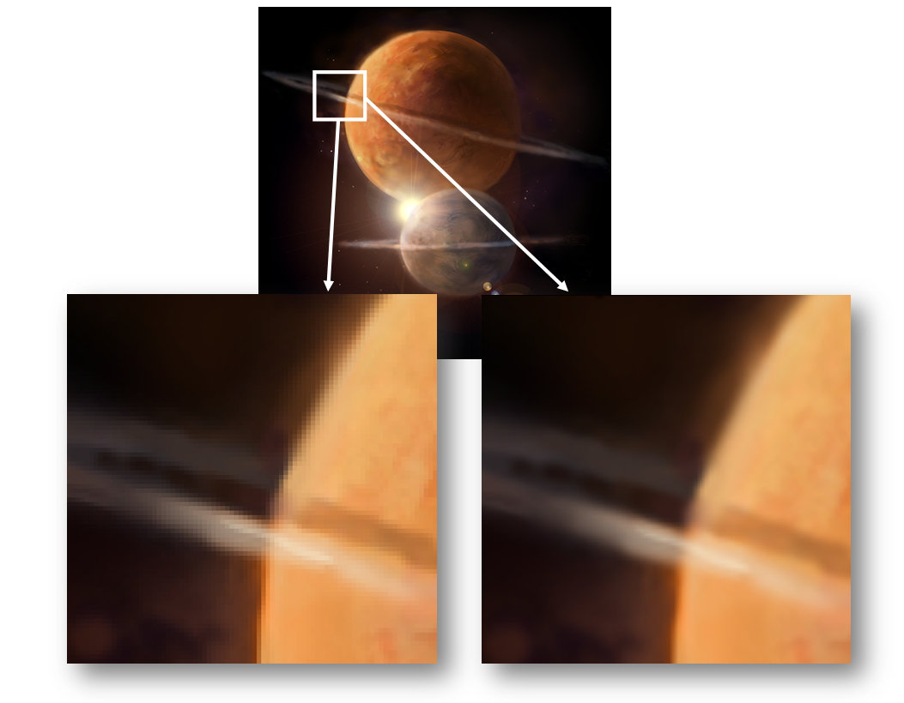

How to resize an image using OpenCL image objects.
Bilinear Filtering
One of the particular benefits of OpenCL image objects is the built-in bilinear filtering.
When you read from an OpenCL image object, instead of picking the nearest pixel to the coordinates given, it can take an average of the four closest pixels. This is hardware accelerated on a Mali-T600s series GPU inside the Texture pipeline.
What this means is that the quality of scaled images can be much higher for minimal perfomance cost.
We will use this example to provide a walkthrough of how to use OpenCL image objects.
Example:

An example of nearest pixel (left) and bilinear filtering (right).
Image Object and Memory Buffer Differences
The tutorial assumes knowledge of OpenCL memory buffers. See Memory Buffers for more information.
OpenCL image objects are used almost identically to OpenCL buffers:
- They both have the type cl_mem.
- For allocation, clCreateBuffer becomes clCreateImage2D (or clCreateImage3D).
- For mapping, clEnqueueMapBuffer becomes clEnqueueMapImage.
- For unmapping, clEnqueueUnmapBuffer works for both memory types.
The biggest differences when using image objects are:
- Image objects require a 'sampler' in order to read from them (see Samplers).
- A kernel cannot read and write to the same image (image parameters must be marked in the kernel definition with __read_only or __write_only).
- Images have a defined data format.
Samplers
As mentioned, in order to be able to read from an image object you require a sampler.
A sampler defines:
- whether the coordinates you are using are normalized
- normalized (in the range [0,1])
- non-normalized
- what strategy to use when the coordinates are outside the bounds of the image
- none (you guarantee that the coordinates are inside the bounds)
- clamp to edge (returns the color of the closest valid pixel)
- clamp (returns a border color defined by the image format)
- repeat (acts as if there are infinite copies of the image tiled next to each other)
- mirrored repeat (the same as repeat except coordinates are flipped at every edge)
- which filtering strategy to use
Certain combinations of these options are restricted.
Samplers can be defined on the host side using clCreateSampler() and passed in the kernel as an argument or directly inside the kernel source. Passing the sampler as an argument to the kernel gives you the flexibility to run the same kernel with different sampling options.
Resizing images with bilinear filtering
Unless otherwise noted, all code snippets come from image_scaling.cpp.
In the sample code we will resize an input image using OpenCL. The image is scaled up by a factor of 8 (adjustable in the code) with bilinear filtering enabled.
Allocate memory for your images
Image objects are allocated in almost the same way as buffers. The main difference is having to specify the data format of the image being used.
You can list the avaliable image formats on your platform using the printSupported2DImageFormats method.
cl_image_format format;
format.image_channel_data_type = CL_UNORM_INT8;
format.image_channel_order = CL_RGBA;
bool createMemoryObjectsSuccess = true;
memoryObjects[0] = clCreateImage2D(context, CL_MEM_READ_ONLY | CL_MEM_ALLOC_HOST_PTR, &format, width, height, 0, NULL, &errorNumber);
memoryObjects[1] = clCreateImage2D(context, CL_MEM_WRITE_ONLY | CL_MEM_ALLOC_HOST_PTR, &format, newWidth, newHeight, 0, NULL, &errorNumber);
if (!createMemoryObjectsSuccess)
{
cleanUpOpenCL(context, commandQueue, program, kernel, memoryObjects, numMemoryObjects);
cerr << "Failed creating the image. " << __FILE__ << ":"<< __LINE__ << endl;
return 1;
}
Map the memory to a host pointer
Again, this step is very similar to mapping a buffer:
size_t origin[3] = {0, 0, 0};
size_t region[3] = {width, height, 1};
size_t rowPitch;
unsigned char* inputImageRGBA = (unsigned char*)clEnqueueMapImage(commandQueue, memoryObjects[0], CL_TRUE, CL_MAP_WRITE, origin, region, &rowPitch, NULL, 0, NULL, NULL, &errorNumber);
{
cleanUpOpenCL(context, commandQueue, program, kernel, memoryObjects, numMemoryObjects);
cerr << "Failed mapping the input image. " << __FILE__ << ":"<< __LINE__ << endl;
return 1;
}
Initialize the memory
Use the pointer on the host side to fill the image with data.
Unmap the memory
Unmap the pointer on the host side (using clEnqueueUnmapBuffer just like with buffers) so that the data can be used inside the kernel.
Pass the image to the kernel
Pass the images to the kernel as arguments in the same way as buffers.
Use the image inside the kernel
Code snippets in this section are from image_scaling.cl.
Define a sampler
See Samplers for more information.
In this walkthrough we define the sample in the kernel source:
const sampler_t
sampler = CLK_NORMALIZED_COORDS_TRUE | CLK_ADDRESS_CLAMP | CLK_FILTER_LINEAR;
- Calculate the coordinates
int2 coordinate = (int2)(get_global_id(0), get_global_id(1));
float2 normalizedCoordinate = convert_float2(coordinate) * (float2)(widthNormalizationFactor, heightNormalizationFactor);
- Read the source image
float4 colour = read_imagef(sourceImage, sampler, normalizedCoordinate);
- Write the destination image
write_imagef(destinationImage, coordinate, colour);
Retrieve the results
Map the image object to a host pointer and read the results.
Running the Sample
From a command prompt in the root of the SDK, run:
This compiles the image scaling sample code and copies all the files it needs to run to the bin folder in the root directory of the SDK.
- Copy this folder to the board.
Navigate to the folder on the board and run the image scaling binary:
You should see output similar to:
11 Image formats supported (channel order, channel data type):
CL_RGBA, CL_UNORM_INT8
CL_RGBA, CL_UNORM_INT16
CL_RGBA, CL_SIGNED_INT8
CL_RGBA, CL_SIGNED_INT16
CL_RGBA, CL_SIGNED_INT32
CL_RGBA, CL_UNSIGNED_INT8
CL_RGBA, CL_UNSIGNED_INT16
CL_RGBA, CL_UNSIGNED_INT32
CL_RGBA, CL_HALF_FLOAT
CL_RGBA, CL_FLOAT
CL_BGRA, CL_UNORM_INT8
Profiling information:
Queued time: 0.092ms
Wait time: 0.135206ms
Run time: 31.5405ms
An output image should be created on the board called output.bmp.
Find solutions for Common Issues.
More Information
For more information have a look at the code in image_scaling.cpp and image_scaling.cl.